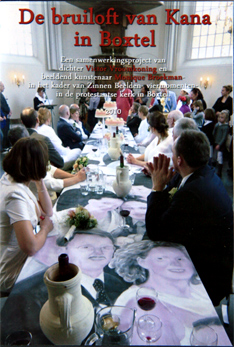

In het kader van het kunstproject Zinnenbeelden Viermomenten in de protestante kerk te Boxtel zijn de (in Boxtel geboren) dichter Victor Vroomkoning en beeldend kunstenaar Monique Broekman op zoek gegaan naar bruidsparen die in deze kerk (voor de wet en/of kerkelijk) getrouwd zijn.
Deze bruidsparen werden uitgenodigd deel te nemen aan een performance op zaterdag 9 januari 2010. Zij namen plaats aan een lange tafel in het midden van de kerk, waarop hun een speciaal voor de gelegenheid ontworpen maaltijd wordt aangeboden. Deze maaltijd maakte, net als het tafelkleed waar deze op geserveerd werd, deel uit van het werk. Verder werden er gedichten voorgedragen.
Deze feestelijke bijeenkomst, "De bruiloft van Kana" genaamd, werd muzikaal omlijst en verfilmd. De film werd als onderdeel van de installatie, gedurende de 4 opeenvolgende weekeinden vertoond in de kerk.
Camera/montage: Emma van der Put
Kok: Lisette Bossert
Concept: Monique Broekman en Victor Vroomkoning
De Bruiloft van Kana te Boxtel from Monique Broekman on Vimeo.
 De DVD 'De bruiloft van Kana' is te koop! Kijk hier in De Winkel..